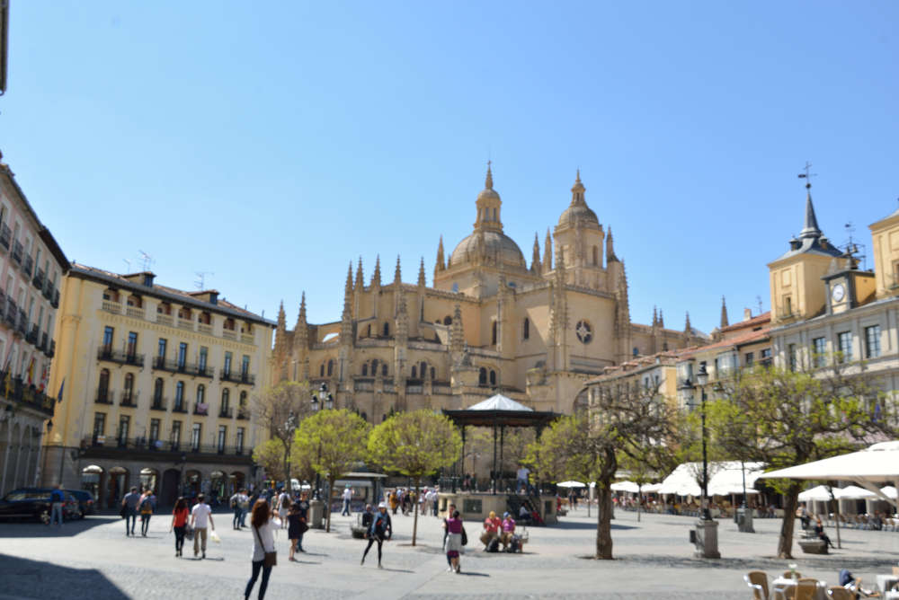
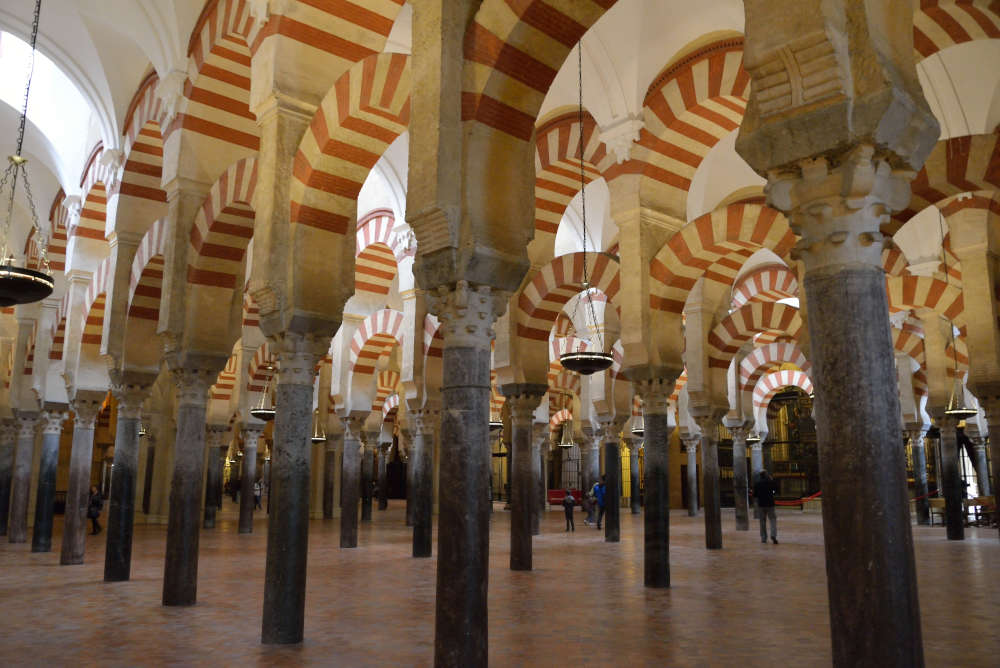
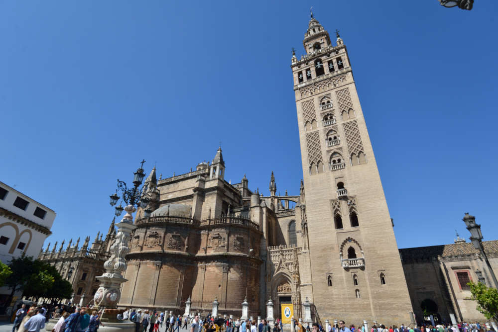
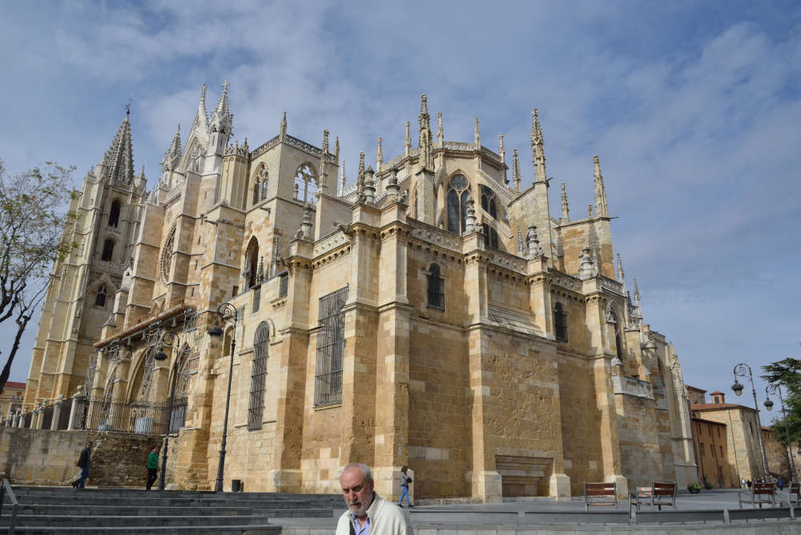

Catedral de Segovia
Santa Iglesia Catedral de Nuestra Señora de la Asunción y de San Frutos
¿Sabías que la Santa Iglesia Catedral de Nuestra Señora de la Asunción y de
San Frutos de Segovia es conocida como la Dama de las Catedrales por sus
dimensiones y su elegancia.
Construida entre los siglos XVI XVIII, tiene rasgos renancentistas aunque
es de estilo gótico tardío, ya que se erigió cuando en la mayor parte de Europa
se difundia el estilo del Renacimiento.
Destaca su estructura en tres altas naves y girola y sus hermosas ventanas
y la calidad de los vitrales. El interior tiene un notable calidad de estilo
gótico, excepto en la cúpula que se construyó en 1630. Las bóvedas se elevan a
30 metros y miden 50 metros de ancho y más de 100 de longitud.
El altar fue mandado construir por el rey Carlos III y fue diseñada por
Sabatini que la terminó en los talleres del Palacio Real de Madrid. Los
vitrales se componen de 65 piezas que se distribuyen el tres fases diferentes,
el siglo XVI, siglo XVII y una tercera fase del siglo XX.
Cuenta con 18 capillas entre la girola y las naves laterales y destacan el
calvario situado a la entrada de la capilla del Sacramento y tiene obras de
Juan de Juni y de Gregorio Fernández.
enlace
enlace

Mezquita/Catedral de Córdoba
Un templo de religiones
El empleo y reutilización de la hoy Catedral durante siglos hace más complejo
su estudio por las numerosas transformaciones que ha sufrido con el tiempo,
aunque nunca dejó de tener una función eminente religiosa, de culto: en
efecto, primero fue la Basílica de San Vicente en época visigoda; a mediados
del siglo VIII fue reutilizada como Mezquita por los musulmanes; y, desde la
Reconquista de Córdoba por Fernando III el Santo en 1236 se ha venido
utilizando como Catedral. Y, si resulta complicado estudiar el monumento en
su etapa islámica (tras el precedente visigótico), aún más lo es sintetizar
su evolución como Catedral, con todas las transformaciones que conllevó la
reconversión del templo al culto cristiano: Baja Edad Media, etapas humanista
y barroca, hasta llegar al siglo XVIII y al comienzo de la restauración de la
Mezquita-Catedral en los siglos XIX y XX.
enlace

Giralda de Sevilla
Torre de la Catedral de Sevilla
La Giralda es la torre campanario de la Catedral. En su día fue la torre
más alta del mundo con sus 97,5 m de altura, además de ser una de las imágenes
más famosas de la ciudad y de toda Andalucía. La torre está constituida por
dos cuerpos diferentes aunque perfectamente unidos, mostrando un ejemplo
perfecto del crisol de culturas existente en la ciudad.
El cuerpo musulmán es el más antiguo, fue iniciado en 1184 por orden de
Abu Yaqub Yusuf para ser el alminar de la mezquita almohade de Sevilla. Como
curiosidad cabe destacar el hecho de que la Giralda no tiene escaleras, sino
35 rampas suficientemente anchas para permitir que el sultán subiera por ellas
montado a caballo para ver la bella estampa que se divisa.
enlace

Catedral de León
Catedral de Santa María de León, la Pulchra Leonina
Para los expertos, es una de las más hermosas y perfectas catedrales góticas,
la conocida como la Pulchra Leonina, haciendo referencia a que la Catedral de
Santa María de León, es una de las más perfectas en cuanto a sus líneas y sus
equilibrios góticos, siendo una de las construcciones más depuradas del gótico
francés.
enlace